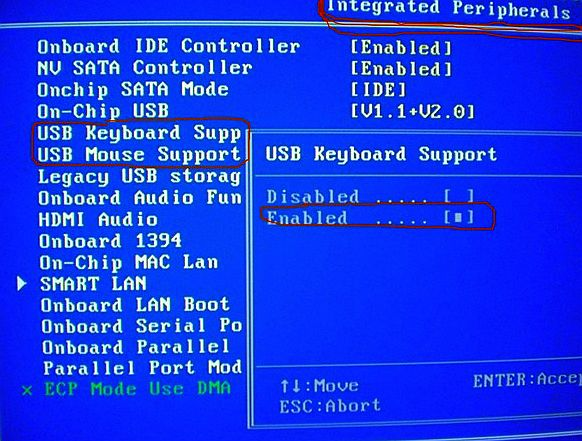

Неисправность клавиатуры связанная с поражением системы вирусом:
- Сканируем ОС установленным на компьютере антивирусом или выбираем проверку на вирусы онлайн на соответствующем сервисе.
Клавиатуру требуется подключить в BIOS (этот случай характерен для ситуации, когда необходимо подключить дополнительную клавиатуру к ноутбуку):
- Перезагружаем ОС, жмём кнопку F2 или кнопку Delete, возможны и другие варианты (зависит от производителя), в момент загрузки, в нижней части экрана появляется подсказка;
- В BIOS находим вкладку, на которой представлен список устройств ввода/вывода (см. Как войти в БИОС). Найдите пункт USB Controller и активируйте его, выбрав надпись Enabled (разрешить);

- Далее в строчке USB Keyboard Support выбрать то же значение – Enabled. Изменения сохраняются нажатием кнопки F10.
Клавиши со стрелками не перемещают курсор, а выдают какие-то цифры:
- Обратите внимание на клавишу с названием "Num Lock" или похожим. Нажмите ее. Световой индикатор над клавишей погаснет, и курсор снова начнет двигаться.
На каждое нажатие клавиш компьютер отвечает гудком:
- Вы находитесь в какой-то программе и заполняете некую хитроумную форму? Некоторые компьютеры издают гудки, когда вы пытаетесь ввести буквы там, где должны быть набраны цифры, или наоборот. Такие же гудки могут сигнализировать о том, что вы пытаетесь ввести лишние символы в уже заполненное поле. Быть может, ваш компьютер завис? В этом случае каждое нажатие клавиш также вызывает гудок. Причина заключается в том, что клавиатура может хранить информацию примерно о 20 последних нажатиях клавиш в специальном месте, называемом буфером клавиатуры, Если компьютер никак не может проснуться, этот буфер быстро заполняется информацией от ваших хаотических нажатий клавиш. После окончательного заполнения буфера каждый символ, который не может в него попасть, вызывает протестующий гудок. Ситуация не из приятных. Остается воспользоваться самой популярной комбинацией клавиш "CtrI+AIt-Del" и перезагрузить компьютер. Если ваш компьютер работает под управлением Windows, то при этом часто удается снять "застрявшую" программу.

: